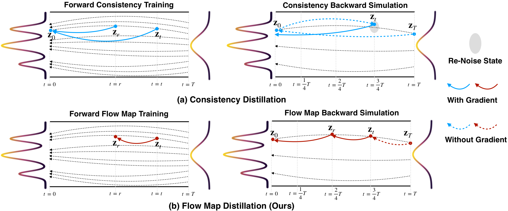
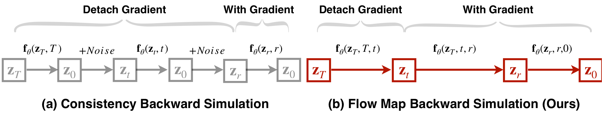
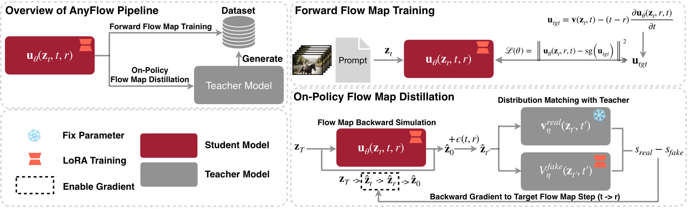
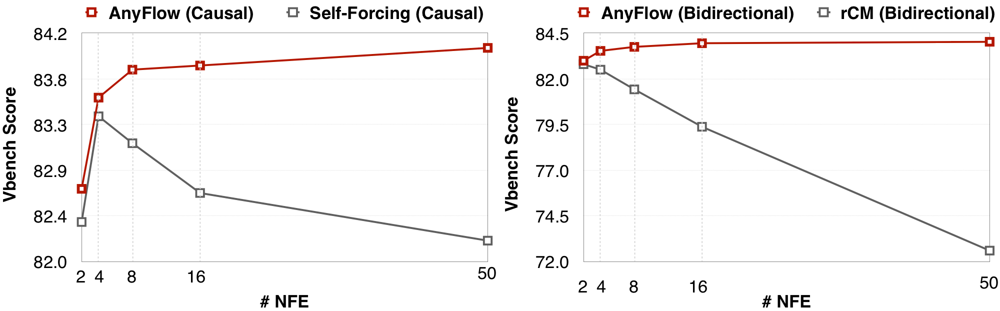

AnyFlow: Any-Step Video Diffusion Model with
On-Policy Flow Map Distillation
1NVIDIA 2Show Lab, National University of Singapore 3MIT
Arxiv 2026
Abstract
Few-step video generation has been significantly advanced by consistency models. However, their performance often degrades in any-step video diffusion models due to the fixed-point formulation. To address this limitation, we present AnyFlow, the first any-step video diffusion distillation framework built on flow maps. Instead of learning only the mapping zt → z0, AnyFlow learns transitions zt → zr over arbitrary time intervals, enabling a single model to adapt to different inference budgets. Concretely, we design an improved forward flow map training recipe that fine-tunes pretrained video diffusion models into flow map models. We further introduce Flow Map Backward Simulation to enable on-policy distillation for flow map models, where reverse divergence is optimized on model rollouts to reduce discretization error and exposure bias. By jointly optimizing forward flow map learning and reverse-divergence supervision, AnyFlow achieves strong few-step quality while maintaining stable improvements as the number of sampling steps increases. Extensive experiments across both bidirectional and causal architectures, at scales ranging from 1.3B to 14B, on text-to-video and image-to-video tasks demonstrate that AnyFlow outperforms consistency-based baselines, while preserving high fidelity and flexible sampling under varying step budgets. At 4 NFEs, AnyFlow reaches 84.18 on the 14B bidirectional model setting, outperforming rCM-14B (83.73), and in the 14B causal model setting, AnyFlow-FAR surpasses Krea-Realtime-14B (84.11 vs. 83.25).
Method Overview
Consistency Distillation vs. Flow Map Distillation
- Consistency distillation learns a direct mapping from a noisy state zt to the data endpoint z0 along the probability-flow ODE (PF-ODE) during forward training (e.g., Consistency Training or ODE Initialization). During on-policy distillation (i.e, DMD), the consistency backward simulation requires re-injecting noise to reach intermediate states, causing error accumulation in multi-step sampling.
- Flow map distillation learns a two-time transition operator zt → zr for arbitrary times t and r on the PF-ODE. It generalizes endpoint consistency (recovering the consistency map when r = 0) while naturally supporting variable step sizes and flexible inference budgets with a single student. AnyFlow follows this paradigm and introduces Improved Forward Flow Map Training with Flow Map Backward Simulation for on-policy distillation.

Figure 2. Comparison of distillation paradigms.
Consistency Backward Simulation vs. Flow Map Backward Simulation
- Consistency backward simulation relies on multi-step sampling from zt toward an intermediate zr, while training still emphasizes the denoising hop zr → z0. Simulating long time spans is computationally expensive, and errors accumulate across steps rather than disappearing as the budget grows.
- Flow map backward simulation exploits the composition property of flow maps: each rollout is split into segments such as T → t, t → r, and r → 0, so supervision stays aligned with zt → zr transitions. Intermediate states can be trained with a flexible effective step size t − r, matching different inference budgets.

Figure 3. Backward simulation for on-policy distillation. (a) Consistency backward simulation. (b) Flow map backward simulation (ours).
AnyFlow Training Pipeline
AnyFlow follows the usual two-stage recipe in video diffusion distillation: forward training for a stable initialization, then on-policy distillation to narrow the train–test gap.
- Stage 1. We apply improved forward flow map training on synthetic (teacher-generated) data so the student picks up the extra time conditioning required for flow maps, turning a pretrained video diffusion model into a flow map student.
- Stage 2. We jointly optimize the same forward flow map objective with distribution matching distillation (DMD) on the student’s own rollouts with Flow Map Backward Simulation. This targets to solve the discretization error (in few-step sampling) and exposure bias (in causal video diffusion), while keeping one student across flexible inference budgets.
- Sampling. At inference, we adopt a vanilla Euler ODE solver for generation.

Figure 4. Overview of the AnyFlow pipeline.
Main Result
- Base model preservation: AnyFlow better preserves knowledge (learned velocity field) from the pretrained video diffusion model, compared to the consistency formulation.
a cooking tutorial featuring a man in a kitchen. He is wearing a white t-shirt and a black apron. In the first frame, he is holding a bowl and appears to be explaining something. In the second frame, he is mixing ingredients in the bowl. In the third frame, he is pouring the mixture into another bowl. The kitchen is well-equipped with various appliances and utensils. There are also other people in the background, possibly assisting with the cooking process. The style of the video is informative and instructional, with a focus on the cooking process.
Teacher model
Figure 5. Base model preservation with the same text prompt. Left: Teacher reference at 50 NFEs. Right: Consistency student and AnyFlow student at 4 and 50 NFEs.
- Any-step sampling: AnyFlow achieves strong few-step quality while maintaining stable improvements as the number of sampling steps increases.

Figure 6. Quantitative comparison of test-time scaling between the consistency model and AnyFlow.
Figure 7. Qualitative comparison of test-time scaling between the consistency baselines (rCM and Self-Forcing) and AnyFlow.
1. Causal Video Diffusion Model (14B)
1.1 T2V Comparison
AnyFlow-FAR-14B achieves better dynamic and quality compared to community consistency baselines (Krea-Realtime-14B, LightX2V-CausVid-14B and FastVideo-14B).
1.2 I2V Comparison
Within the same model, AnyFlow-FAR-14B can support I2V generation as well; it achieves similar quality compared to Wan2.1-I2V-14B (50×2 NFEs).
2. Bidirectional Video Diffusion Model (14B)
2.1 T2V Comparison
BibTeX
If you find our work useful, please consider citing:
@article{gu26anyflow,
title={AnyFlow: Any-Step Video Diffusion Model with On-Policy Flow Map Distillation},
author={Yuchao Gu and Guian Fang and Yuxin Jiang and Weijia Mao and Song Han and Han Cai and Mike Zheng Shou},
year={2026},
}